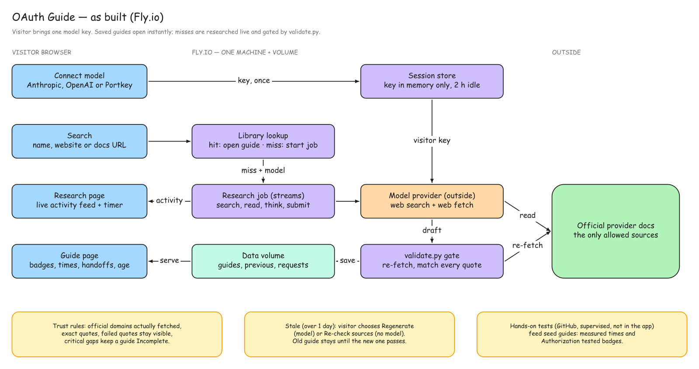

Product requirements · as built · 29 October 2026
OAuth Guide
A web app that tells developers and agent builders how to register an OAuth app with a provider, how long it takes, what might block them, and where they have to take over from an agent. Every step is tied to an official source that is re-checked before a guide is saved.
Problem
A developer building an AI agent wants their users to connect an app. Before launch they may need to create an OAuth app with the provider and get it approved. Today they piece together documentation, work through unfamiliar consoles, and cannot tell whether setup takes an hour or weeks of waiting.
An OAuth app is the provider-side registration for an integration. A user connection is one person authorizing through that registration. Registering, testing with your own account, and approval for wider distribution are separate milestones, and each provider handles them differently.
Developer outcomes
Where to start, what next
Ordered steps with prerequisites and the console path for each.
How hard it is
Easy, moderate or hard, with the main reason.
Time and waiting
Setup time, build time and any approval wait that blocks other users.
Agent or you
Which steps an agent can do and where the developer must take over, and why.
Tested, sourced, uncertain
Evidence badges per step, quote checks, and explicit gaps.
Shareable
Every guide has its own URL and stays in the library for reuse.
Scope
| In scope | Out of scope |
|---|---|
| Web app: search, library, guide pages, live generation for unfamiliar apps | Doing setup on the developer's behalf; the product guides, the developer acts |
| Research from official provider documentation, re-checked by a validator | Testing every app hands-on before publishing (rejected, see decisions) |
| One model connection per visitor: Anthropic, OpenAI or Portkey | User accounts, saved keys, billing |
| Hands-on testing for a sample (GitHub) in supervised sessions | Optional marketplace or directory listings as part of OAuth setup |
Architecture

oauth-guide-design.excalidraw. Model provider and official docs are outside our server.| Part | File | Role |
|---|---|---|
| Web server | mock/server.py | Standard-library HTTP server: pages, library lookup, sessions, research jobs, status and activity, regenerate and re-check |
| Providers | mock/providers.py | Builds the Anthropic, OpenAI or Portkey client and runs the connection check |
| Research agents | mock/research.py | Streams the model's research, turns events into activity lines, runs one repair round |
| Validator | mock/validate.py | Re-fetches cited pages, matches quotes, anchors domains, checks time and handoff fields |
| Pages | mock/static/ | Search and connect, research feed, guide page, browse |
| Seed guides | mock/seed-guides/ | Copied into the data volume on first start; never overwrite saved guides |
User flows
Find a guide
- Developer types an app name, website or documentation URL.
- Lookup normalizes it, so
GitHub,github.comand adocs.github.comURL find the same guide. - A saved guide opens immediately. No model key is needed.
Generate a guide for an unfamiliar app
- With no model connected, the page asks the developer to connect one.
- The developer picks one provider and pastes one key. A cheap call checks it; the key stays masked until it passes.
- The research job starts. The research page shows a live feed: searches, pages read, short thinking summaries, the quote checks, and an elapsed timer with "usually 2–5 minutes".
- The validator re-fetches every cited page. The guide is saved, complete or Incomplete, and opens.
Refresh an old guide
- Guides older than one day show a banner. Saved guides are always served first.
- Regenerate runs a full research with the visitor's model. The old guide stays live until the new one passes and is kept as the previous version.
- Re-check sources only (for guides with hands-on test results) re-fetches every page and re-checks every quote with no model, keeping the test records.
What a guide contains
| Field | Meaning |
|---|---|
| Difficulty | Easy, moderate or hard, with the main reason |
| OAuth setup time | Console work to the first successful sign-in; measured where we ran a timed test |
| Building it into your app | Callback, token storage, refresh and first API call; always an estimate with stated assumptions |
| Approval wait | Only reviews that block other users from connecting, quoted from the provider when possible |
| Steps | Title, detail, settings with explanations, evidence level, who does it, handoff reason, time, source and exact quote |
| Agent vs you | Lists built from each step's who and handoff fields |
| Gaps | What is unknown, whether it blocks completion, and the next action |
| Sources and domains | Every cited page, plus the domains treated as official and which model researched the guide |
| Age | The newest of generated, re-checked and validated dates |
Evidence levels: Documented Console observed Authorization tested. A guide's overall badge is All steps source-checked or Incomplete.
Evidence and trust
- Only official provider documentation counts as a source.
- Each step quotes one or two sentences copied exactly from a page the agent fetched.
- The validator fetches the page again and checks the quote is there. Matching ignores tags, whitespace, curly versus straight quotes, letter case, and Markdown code or bold marks; it does not accept paraphrase.
- Only domains the research actually fetched, or the visitor's docs URL, count as official. Others are dropped and recorded as a gap.
- A failed quote marks that step unverified and the guide Incomplete; a critical gap also keeps it Incomplete. Saving never upgrades evidence.
- "Authorization tested" requires a test record from a real run.
- Activity lines and guide text are always shown as text, never as HTML.
Model providers and keys
| Provider | Research tools | Live status |
|---|---|---|
| Anthropic (direct key) | Claude web search and web fetch; default model claude-opus-5-5; server-side refusal fallbacks enabled | Key check tested; no live research run |
| OpenAI | Responses API with web search; schema-constrained JSON output | Stub-tested only |
| Portkey (gateway to Claude) | Same Claude tools through Portkey's Anthropic-compatible route; virtual key or Model Catalog provider slug | Two live runs (Gmail, GitLab) |
- One provider per visitor. The key is posted once, held in server memory against an HttpOnly, SameSite=Strict cookie, and dropped after two idle hours or a restart.
- Keys are never logged, written to disk, or returned to the page; a self-check asserts this.
- Model usage is billed to the visitor's account.
Research agent
- The prompt restricts sources to official docs, requires exact quotes, sets evidence to Documented, and treats the visitor's request as data, not instructions.
- The guide comes back through a strict
submit_guidetool (Claude) or strict JSON schema (OpenAI), so the shape is guaranteed. - The validator's findings go back to the model once for repair; the result is saved either way, with failures visible.
- Calls stream, so the feed shows each search, page read and thinking summary as it happens. Paused server-tool turns resume automatically.
- At most three jobs run at once; repeat searches join a running job.
Time estimates
| Source | Used for | How |
|---|---|---|
| Measured | GitHub: register 37 s, secret with Confirm access 76 s, first authorization 26 s | Timed run on 28 October 2026, with Claude driving Chrome; a lower bound for a person |
| Hand estimate | Other steps of the seed guides | Engineering judgment per step, with reasoning and stated assumptions |
| Model estimate | Generated guides | The research model fills min, max and reason per step; the validator checks format only |
Cards add up each phase's minimums and maximums. Assumptions shown on every guide: an experienced developer, an existing HTTPS backend with a secret store and token database, and a standard OAuth library; excluding customer admin approvals, security review and rollout.
Freshness
Saved guides are always served. After one day the guide offers Regenerate (needs a connected model) and, for tested guides, Re-check sources only (no model). Regeneration of a tested guide asks for confirmation, because a docs-only run cannot reproduce hands-on test evidence.
Hosting and cost
Fly.io
One shared-cpu machine, 512 MB, always on; 1 GB volume at /data.
Per new guide
On the visitor's key; Sonnet-class at the low end, Opus at the high end. Unmeasured estimate.
Why one machine
Keys and running jobs live in process memory, so auto-stop is off and the app cannot scale out.
Local development runs python mock/server.py. With no model connected locally, a miss can be queued for a Claude Code session watching the request folder; production disables this.
Validation results
| Guide | How it was produced | Result |
|---|---|---|
| GitHub (OAuth App) | Two hands-on runs: registration, secret, consent, token exchange, one GET /user; second run timed | 11/11 quotes token exchange 200, API 200, no scopes |
| Jira Cloud (3LO) | Docs plus the developer console up to the create form | Incomplete 16/16 quotes; creation blocked on the developer-terms checkbox |
| Linear | Live research (Claude in a supervised session) | 10/10 quotes docs only |
| Slack | Live research (Claude in a supervised session) | 14/14 quotes docs only |
| Gmail | In-app research through Portkey | Incomplete 9/9 quotes; project-creation page not fetched |
| GitLab | In-app research through Portkey | 11/11 quotes after the Markdown quote fix |
What we learned and corrected
- Signed in is not enough. GitHub asked for Confirm access when generating a secret on both runs; it became a "you take over" step.
- Marketplace review is not OAuth setup. Slack (up to 10 business days plus up to 10 weeks) and Atlassian (10–15 business days) apply only to optional listings; guides now show approval waits only when they block other users.
- Quotes copied from Markdown. A correct GitLab quote failed because web fetch returns Markdown with backticks; matching now ignores code and bold marks.
- Docs render without JavaScript. Atlassian, GitHub and Google pages all returned their text to a plain fetch.
- Gmail's real blocker is verification. Sensitive or restricted scopes for public apps need Google verification and, for restricted scopes, a security assessment.
Decision log
| Decision | Why | Rejected |
|---|---|---|
| Web app | The brief asks for a shareable link and live generation | Skill, MCP server or HTTP API first |
| Generate from sources, test a sample | The brief says attempt setup "as practical" and expects live generation; human-only checks block automated tests | Test every app before publishing |
| Visitor brings one key | No model cost for us; visitor controls spend | Our key; all three keys required |
| Fly.io server | Same evidence check for every provider; no browser-access limits; library persists | GitHub Pages with research in the browser; library-only site with no generation |
| Approval wait = gating reviews only | Optional listings were being read as "OAuth takes two weeks" | Counting marketplace review as setup time |
| Setup and build times separate | Developers ask both "how long to get it working" and "how long to build it in" | One combined effort figure |
| Visitor chooses to refresh | Keeps cost with the visitor and protects tested evidence | Automatic regeneration after one day |
| Standard library server | Nothing to install beyond two provider SDKs | A web framework |
Limitations and next steps
- The in-app agent reads documentation; it never signs in to a provider. Hands-on tests exist only for GitHub.
- Direct Anthropic and OpenAI research paths have not run live.
- Time estimates are not calibrated; the shared build baseline is planned.
- Pages that need JavaScript would fail the quote check rather than pass.
- Keys and jobs are lost on restart; one machine only.
- Next: shared time baseline, "if this step fails" help, a downloadable "test it yourself" kit per provider, and the production evidence checks above.
Feature index
| Area | Commits |
|---|---|
| Server, pages, lookup, browse | 41ea247 ee6934e 5e3ad47 2bcf91a |
| Validator and evidence | 0dd8201 f2a925e e89b1a9 |
| Seed guides | 869b36a 294a31e 84ce2f2 6984cc2 |
| Time, difficulty, handoffs | 99481c0 7eec1b4 86186c2 7ee329d 52dad07 f5e41ff e63290d |
| Model connection and providers | c60cf48 3360040 15759b4 |
| Research agents and pipeline | 7f644c2 e7a30d8 4874117 0240941 |
| Live activity feed | c58b1a5 d1c9dfe 2e42789 5d29ba9 |
| Freshness | 07eeee6 7777fc1 0548e4b |
| Data and deployment | 041bf59 2dc5356 |